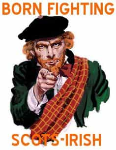

August is the author of the Absolute Alpha Male Series. Follow him on Twitter or Facebook.


Work hard. Play hard. Pray hard.
These are words to live by in the American south. Easily summed up, but deeper meaning can be quickly lost on someone who hasn’t grown up there. This article shares what I’ve learned from living here in the last five years.
Most areas of the United States identify with one group or another without much effort, but in the south an often-cited ancestry is “American.” Which usually refers to the Scots-Irish. A group who had an influence so great on the course of American culture that it basically became synonymous with American culture.
To understand the south you first have to understand who southerners are and where they come from. From their earliest days in their fight against the English under the likes of William Wallace to the Protestant Reformation, the Scottish people have been an independent group with a fighting spirit.

None embodied this more than the Border Reivers who were a wild bunch living along the borders of Scotland. Quickly the Borderers found that raising crops only to have them burned when warring factions came through was a waste of time. Raiding livestock however proved to be profitable, as did their riding ability as skilled horsemen and guerrilla tactics.
During war in this area allegiance to any one side could mean death whenever a new ruler rose to power so the Borderers remained loyal only to their kin and clan. To make matters worse the rulers who employed them to maintain law and as the first line of defense would often deal with them harshly in other times when their lawlessness got out of hand.
All this encouragement of predatory behavior gave rise to a way of life based around their own strength, cunning, and gain at another’s expense. Combined with their defiance to authority you have the beginnings of what would later become Ulster-Scots in Ireland and the Scots-Irish in America.
Having failed to find their desired life in Ulster the Scots set out once again for America. First brought here by the promise of land on the frontier (as a buffer between the Indians and Quaker pacifists) they didn’t start arriving in large numbers until Governor Gooch of Virginia offered them something they never truly had before—religious freedom.
Frontier life in the Shenandoah Valley was full of hardships and danger, which soon gave rise to one of the key characteristics of the southerner—self-reliance. Southerners are hard workers. They hold on dearly to their second amendment rights, stemming from a time where mistrust of the government was common and the threat of wolves or Indians was real. A man had to defend his home, family, and way of life. If he wanted to eat he had to put in the work farming or making whiskey.
If you want respect from a southerner the first way is to be a hard worker.
It wasn’t all hard work though. Often people would gather together to help with the work and with them they’d bring whiskey and music. Out of these Appalachian hollows came the fiddle and banjo music, which would later transform in Nashville to what is known today as country music.
Speaking of Tennessee there must be something in the water as Knoxville has also produced some great looking women like Megan Fox, Christina Hendricks, and Hailey Bright. What’s more southern women really are friendly, but there are a few things you’re going to need to learn before you get carte blanche.
The first is basic social conduct and the other is the southern man.
One of the first things you’ll notice about the south is complete strangers will talk to you. It’s not weird here, it’s just good manners. Manners are big in the south. Here are a few more:
One of the most baffling examples is perhaps the southern version of saving face. Anytime you say something that falls too far outside of proper social conduct you’ll be ignored as though you never said what you said thus doing you a favor by not acknowledging it and saving you the embarrassment.
While manners are important so is the concept of honor. Most readily seen in the southern man. Masculine guys who like to drink and fight still live here. They’re territorial and honor is quickly upheld with violence. He’s raised to be respectful and chivalrous towards women. Take what’s his, he thinks is his, or disrespect his women and you’ll have a fight on your hands.
Basically this came out of the tradition of early settlers feuding. Men desired to be feared and respected enough that others wouldn’t try to steal from them. Post war poverty ensured many men were only left with their honor, which was defended at all costs.
Southerners go to church. Even the non-religious ones go on the major holidays like Christmas, Easter, and Mother’s Day. Yes, Mother’s Day. It’s the south. Family is a big deal here.
Although church going isn’t the only religion you’ll find in the south. There are two others: food and college football. BBQ, booze, and co-ed boobs tailgating on game day means you’ve come full circle. Now you’re playing hard!
Just remember if you really want to know what it is to be a southerner keep in mind it really comes down to four key elements: music, food and drink, religion, and honor. Stay on the right side of these and you too can work hard, play hard, and pray hard in the south.
Read More: 10 Things I Learned From Touring The American Midwest